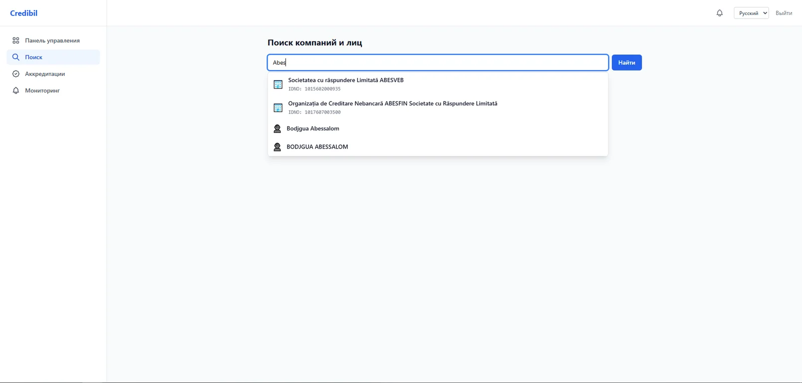
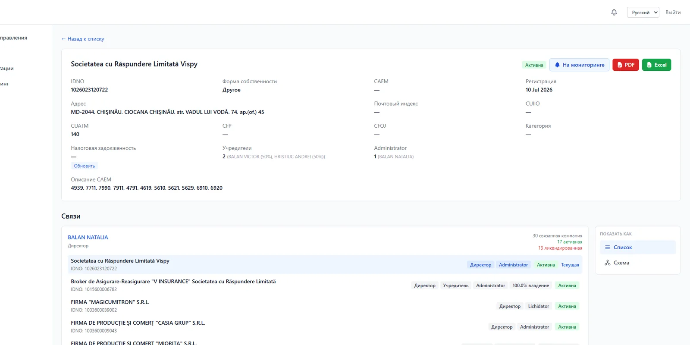
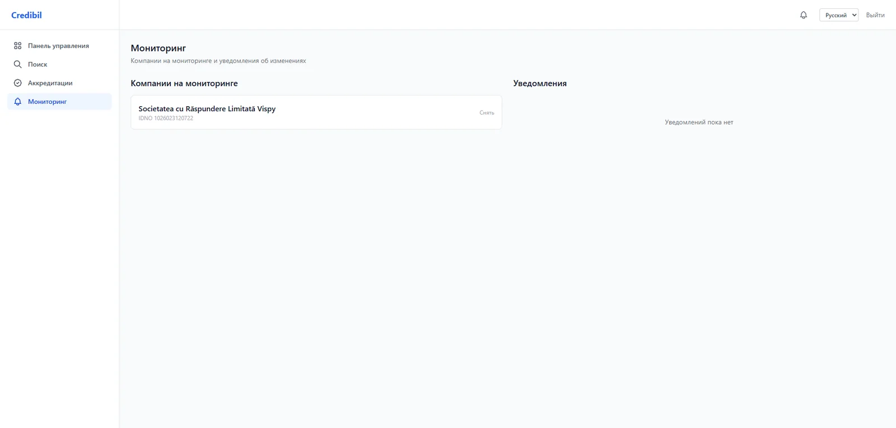

Карточка компании
VISPY S.R.L.
IDNO 1026023120722
АктивнаОбновлено сегодня
Учредители2
Связанные компании30
МониторингВключён
Найдите компанию или связанное лицо, изучите регистрационные сведения, корпоративные связи и доступные факторы риска до принятия делового решения.
Не каталог компаний, а рабочий инструмент проверки.
Компании и лица по названию, IDNO и ФИО.
Структурированный результат в PDF и Excel.
Мониторинг выбранных компаний и изменений.
Credibil собирает доступные сведения о компаниях и связанных лицах и превращает разрозненные записи в понятную структуру для делового решения.
Сначала вы видите субъект проверки, затем его статус, владельцев, связи, события и доступные разделы отчёта.
Показываем фактический интерфейс Credibil: поиск, карточку компании, корпоративные связи и мониторинг.



Credibil показывает роли связанных лиц, доли владения, активные и ликвидированные организации в одном контексте.
Наличие данных зависит от конкретной компании и подключённых источников.
IDNO, дата регистрации, адрес, правовая форма, CAEM и классификационные сведения.
Доступные финансовые отчёты и налоговая задолженность.
Проверка наличия судебных дел и связанных событий.
Доступные сведения о государственных закупках.
Отдельный раздел данных MOLDAC и связь с компаниями.
Отдельные блоки проверки с прозрачным статусом наличия или доступности данных.
Добавьте важную компанию в мониторинг, чтобы отслеживать изменения после начала сотрудничества.
Включить мониторингСтарое и новое значение фиксируются в событии.
Дата изменения и источник доступны в карточке.
Система сохраняет дату последней проверки.
Сформируйте PDF для согласования и хранения или экспортируйте данные в Excel для дальнейшей работы.
Сформировать отчёт ↗Введите название компании, IDNO или ФИО.
Изучите статус, владельцев, связи и доступные события.
Скачайте отчёт или добавьте компанию в мониторинг.
Credibil работает с данными о компаниях и связанных лицах в Республике Молдова и показывает источник и дату актуальности там, где это доступно.
Credibil не является государственным органом и не заменяет юридическое заключение.
Контур карты: Wikimedia Commons, NordNordWest, CC BY-SA 3.0.
Найдите компанию по названию или IDNO и перейдите к структурированным сведениям о статусе, владельцах, связях и доступных рисках.
Начать проверку ↗